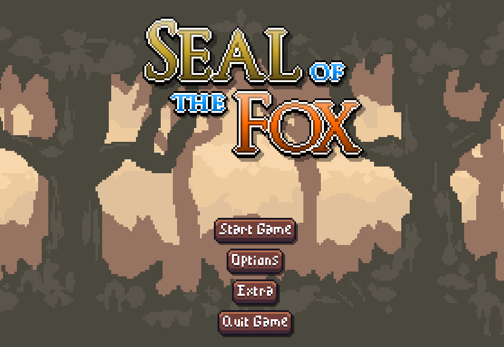
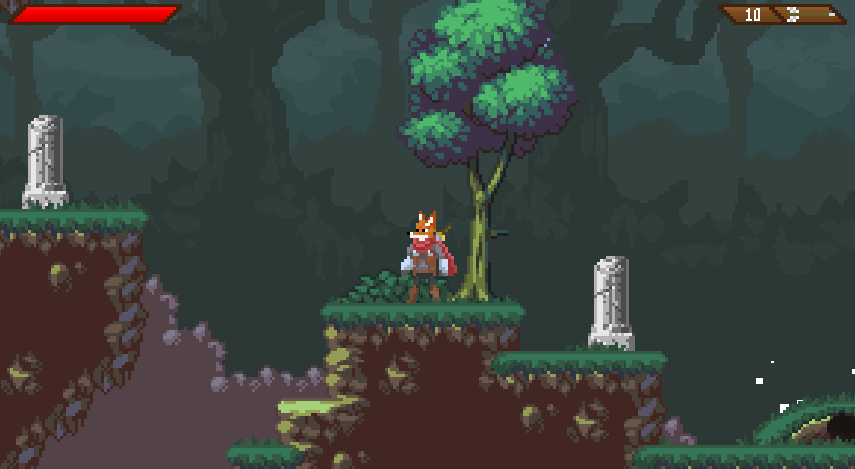
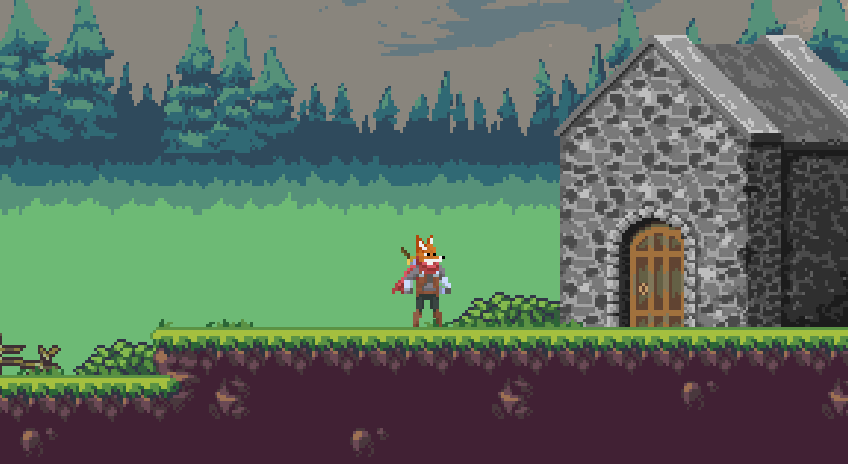
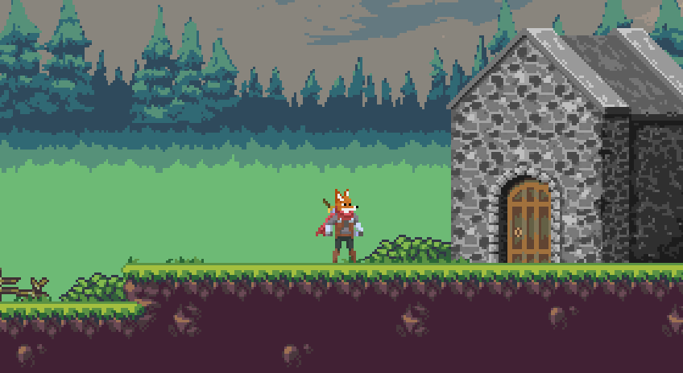

This game demo was my first attempt at making a Metroidvania-adventure game. I worked on the game entirely by myself, I was responsible for all of the programming and all of the designing. A lot of the art used comes from free game assets, which are all listed in a file inside the game's folder.
During this project I learned a lot about Unity 2D, its physics and animations systems. I learned how to design responsive controls, how to design levels and how to design UI.
The first early builds of the game were well received on itch.io. The development of the game has continued since then, but it is currently on hold.
- Store page (Fox Game Demo): Itch.io
- Youtube playlist: Seal of the Fox
 
 
